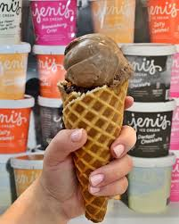
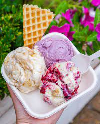
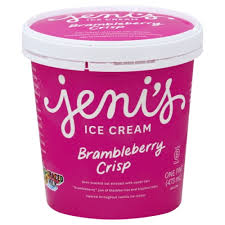

Jeni's Splendid Ice Creams!
Tips From An Employee
Get The Waffle Cone!

Order a Trio!

Take Home a Pint!

If you don't want to risk the mess of a drippy cone on a hot day, that's no excuse. Order the waffle cone upside down on top of your ice cream. You will thank me later. But if you're really lame and just don't want the cone, regular bowls come with waffle cone crips. If you are nice to your server (a.k.a. me) I will give you a few extra crisps for free. Don't tell Jeni.
There are a bunch of different flavors to try, and they are all unique to Jeni's! The best way to get to try multiple different flavors is by ordering a trio! Don't ask me which three flavors compliment eachother the most unless you like peanut butter and chocolate; that is all I will reccomend to you. I have the pallet of a child. But if you really want to do a full sample, get the Jeni's flight. You get to try 10 differnt flavors!
Come onnnnn just get a pint. You and I both know you want one. And when you're finishing a rough day at work and that splendid little Jeni's pint is waiting in your freezer, you're gonna be so grateful. You gotta get the Brambleberry Crip. Don't play yourself. Jeni's likes to do celebrity collaborations when making new ice cream falvors. We just recently had a special flavor made by Dolly Parton herself! It sold out in under an hour. Gotta be quick with the pints! Get on it!